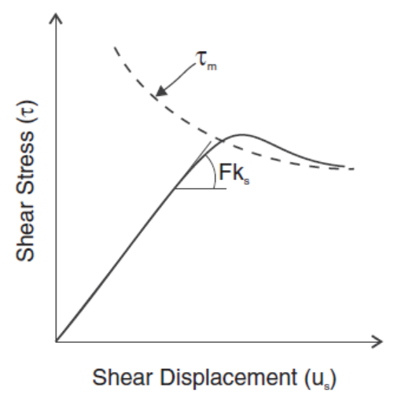
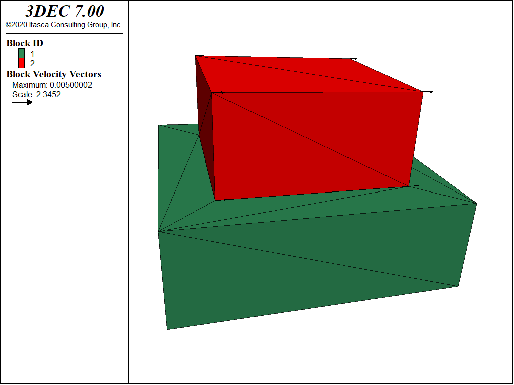

3DEC 中的连续屈服节理模型
背景
实际问题的数值模拟可能使节理经历非常复杂的加载路径。为拟合室内试验而开发的经验模型，仅能给出简单加载条件下的响应。更一般的情况需要在曲线之间插值，或采用其他任意假设。Cundall 和 Hart（1984）提出的连续屈服节理模型，旨在简单模拟节理受剪渐进损伤的内部机制。该模型还采用类似 Dafalias 和 Herrmann（1982）土体模型的“边界面”概念，为动力模拟提供连续滞回阻尼。Cundall 和 Lemos（1990）报道了使用该模型研究地震事件诱发岩石断层失稳的应用。
公式
与标准莫尔—库仑节理模型相比，连续屈服模型尝试考虑实际试验中的某些非线性行为，例如节理剪切损伤、法向刚度对法向应力的依赖，以及剪胀角随塑性剪切位移减小，因此被认为更“符合实际”。主要特征包括：
- 剪应力—剪切位移曲线始终趋向节理的“目标”抗剪强度，即曲线瞬时梯度直接取决于强度与应力之差。
- 目标抗剪强度随累积塑性位移连续减小，后者为损伤的度量。
- 剪胀角取为表观摩擦角与残余摩擦角之差，其中表观摩擦角由当前剪应力和法向应力确定。
这些假设使模型自动表现岩石节理常见的峰值—残余行为。此外，无论应变水平多小，卸载与再加载循环均表现滞回。
模型描述如下。法向加载响应以增量形式表示为
其中，法向刚度 \(k_n\) 为
表示观测到的刚度随法向应力增大而提高，其中 an 和 en 为模型参数。通常假定抗拉强度为零。
对于剪切加载，模型从剪切开始即表现不可逆非线性行为。图 1（Figure 1） 显示恒定法向应力下单调加载的典型应力—位移曲线。剪应力增量计算为
其中，剪切刚度 \(k_s\) 也可取为法向应力函数。例如，
式 (2) 和 (4) 定义的刚度函数，是与试验数据一致的最简单函数。如有需要，可替换为双曲线关系等更复杂函数。


图 1：连续屈服节理模型的剪应力—位移曲线及边界抗剪强度
式 (3) 中的切线模量由因子 \(F\) 控制，该因子取决于实际应力曲线至目标或边界强度曲线 \(\tau_m\) 的距离，如图 1（Figure 1） 所示。
因子 \(r\) 初始为零，用于在荷载反向后立即恢复弹性刚度，即当 sgn(\(Δu_s\)) 不等于 sgn(\(Δu^{(old)}_s\)) 时，将 \(r\) 设为 \(\tau/\tau_m\)，因而使 \(F\) 为 1。实际中，将 \(r\) 限制为 0.75，避免剪应力近似等于边界强度时产生数值噪声。边界强度为
参数 \(\phi_m\) 可理解为节理以最大剪胀角剪胀时对应的摩擦角。随着损伤积累，该角按以下方程连续降低：
其中，塑性位移增量定义为
\(\phi\) 为岩石表面的基本摩擦角。\(R\) 为表示节理粗糙度的材料参数，量纲为长度。
\(\phi_m\) 也可理解为没有损伤，即没有凸起被剪断时的有效摩擦角。但动员相应强度之前，需要一定剪切位移，而这会减小 \(\phi_m\)。
具有长度量纲的参数 \(R\)，控制 \(\phi_m\) 随塑性剪切位移降低的速率。\(R\) 较小时，\(\phi_m\) 快速减小；R 较大时，\(\phi_m\) 降低较慢，因此峰值应力更大。边界强度等于剪应力时达到峰值。此后 F 为负，节理进入软化阶段。更复杂模型中，\(R\) 应取决于 \(\sigma_n\)。
式 (7) 给出的 \(\phi_m\) 增量关系，等价于
其中，\(\phi^{(i)}_m\) 为 \(\phi_m\) 初始值，表示节理原位状态。
塑性位移 \(u^p_s\) 始终增加。其计算采用所施加位移中，扣除与初始刚度对应位移后的剩余部分；初始刚度见式 (4)。用模型拟合试验结果时，可将 \(\phi_m\) 初始值作为参数，物理上对应试样初始预剪切或损伤。
有效剪胀角计算为
即应力高于残余强度水平时都会发生剪胀，并由实际表观摩擦角确定。目前公式在剪切方向反转伴随法向应力大幅变化时，可能产生不可接受的结果。例如，先在给定 \(\sigma_n\) 下剪切，再在无剪切运动时显著降低法向应力，随后反向剪切。如果 \(\sigma_n\) 变化使边界强度大幅下降，或采用应力相关剪切刚度，则原则上可能出现卸载曲线高于加载曲线，导致能量产生。需要进一步研究和修改模型以避免这一问题。在此之前，对于 \(\sigma_n\) 大幅降低的情况，应谨慎使用该模型。
状态
每个子接触都有相应破坏状态。可以绘制破坏状态（:kwd:``Joint Subcontact` 绘图项），也可通过 FISH（子接触状态（block.subcontact.state））查询。通过 FISH 查询时，状态用 64 位变量表示，每一位对应一种可能状态。连续屈服模型的可能状态见下表。
| 连续屈服模型破坏状态 | 值 | 标签 |
|---|---|---|
| 当前发生剪切破坏 | 1 | slip-n |
| 当前发生拉伸破坏 | 2 | tension-n |
| 过去发生过剪切破坏 | 4 | slip-p |
| 过去发生过拉伸破坏 | 8 | tension-p |
| 峰前状态 | 16 | pre_peak |
| 峰后状态 | 32 | post_peak |
| 处于残余强度 | 64 | residual |
| 卸载 | 128 | discharge |
通过置位不同位，可组合多种状态。例如，过去曾拉伸破坏、当前正在剪切破坏的子接触，其状态值为 8 + 1 = 9。值为 0 表示未破坏，即弹性状态。
连续屈服模型参数汇总
连续屈服模型相关参数汇总于表 2（Table 2）。3DEC 通过 block contact jmodel assign continuously-yielding 命令使用该模型。
| 参数 | 说明 | 关键字 |
|---|---|---|
| \(a_n\) | 节理法向刚度（输入） | kn-initial |
| \(e_n\) | 节理法向刚度指数（输入） | exponent-normal |
| \(a_s\) | 节理剪切刚度（输入） | ks-initial |
| \(e_s\) | 节理剪切刚度指数（输入） | exponent-shear |
| \(R\) | 节理粗糙度参数（输入） | roughness |
| \(\phi^{(i)}_m\) | 节理初始摩擦角（输入） | friction-initial |
| \(\phi\) | 固有摩擦角 | |
| \(\phi_m\) | 有效摩擦角 | |
| \(k_n\) | 定义为 \(\sigma_n\) 函数的法向刚度 | |
| \(k_s\) | 定义为 \(\sigma_n\) 函数的剪切刚度 | |
| \(\tau\) | 节理上的剪应力 | |
| \(\tau_m\) | 破坏或“边界”剪应力 | |
| \(Δu_s\) | 当前剪切位移增量 | |
| \(Δu^{(old)}_s\) | 上一剪切位移增量 | |
| \(u^{(p)}_s\) | 累积塑性剪切位移 | |
| \(r\) | 上次反向时的应力比，初始 \(r\) = 0 | |
| \(i\) | 有效剪胀角 |
属性
- continuously-yielding
- al f
加载参数（只读）
- exponent-normal f
节理法向刚度指数（输入）
- exponent-shear f
节理剪切刚度指数（输入）
- friction-initial f
节理初始摩擦角，单位为度（输入）
- friction-residual f
节理残余摩擦角，单位为度（输入）
- kn-current f
当前节理法向刚度（只读）
- kn-initial f
节理初始法向刚度（输入）
- kn-maximum f
节理最大法向刚度（输入）
- kn-minimum f
节理最小法向刚度（输入）
- ks-current f
当前节理剪切刚度（只读）
- ks-initial f
节理初始剪切刚度（输入）
- ks-maximum f
节理最大剪切刚度（输入）
- ks-minimum f
节理最小剪切刚度（输入）
- plastic-strain f
塑性剪应变（只读）
- roughness f
节理粗糙度参数（输入）
- sdisp-peak f
最大剪应力处的剪切位移大小（只读）
- sdisp-residual f
开始达到残余剪应力时的剪切位移大小（只读）
- sdisp f
上次卸载开始时的剪切位移大小（只读）
- sstress-maximum f
边界剪应力（只读）
- sstress-peak f
峰值剪应力（只读）
- tol f
判断残余状态的容差，默认为 1e-5（输入）
- ussisref f
参考剪切位移大小（只读）
工程应用算例
以下直剪试验应用示例演示连续屈服节理模型的使用。
研究对 \(\phi\)，即节理初始摩擦角，采用两种不同假设的影响。第一个示例假定初始摩擦角为 59.3◦，第二个取为 40.1◦。下列问题参数适用于两个示例。
| 属性关键字 | 说明 | 值 |
|---|---|---|
| density | \(\rho\)（块体质量密度） | 2600 kg/m3 |
| 剪切 | \(G\)（块体剪切模量） | 3 GPa |
| kn-initial | \(a_n\)（节理法向刚度） | 100 GPa/m |
| ks-initial | \(a_s\)（节理剪切刚度） | 100 GPa/m |
| exponent-normal | \(e_n\)（节理法向刚度指数） | 0.0 |
| exponent-shear | \(e_s\)（节理剪切刚度指数） | 0.0 |
| friction-initial | \(\phi\)（节理固有摩擦角） | 59.3◦ 和 40.1◦ |
| roughtness | \(R\)（节理粗糙度参数） | 0.1 mm |
| bulk | \(K\)（块体体积模量） | 4 GPa |
图 2（Figure 2） 显示直剪试验模型。首先在节理上施加恒定法向应力 10 MPa，然后使上部块体以恒定水平速度移动。使用 FISH 函数 av_str，计算节理平均法向和剪切应力，以及法向和剪切位移。两试验的数据文件见示例 2.1 和 2.2。


图 2：直剪试验的 3DEC 模型
图 3(a) 显示节理初始摩擦角为 59.3◦ 时，剪应力与剪切位移的关系；该假设下法向位移与剪切位移关系见图 3(b)。初始摩擦角为 40.1◦ 时，相应关系分别见图 4(a) 和图 4(b)。


图 3：初始节理摩擦角为 59.3◦ 的连续屈服模型直剪试验结果


图 4：初始节理摩擦角为 40.1◦ 的连续屈服模型直剪试验结果
数据文件
cy_1.dat
model new
model large-strain off
; 文件 cy_1.dat
; 连续屈服节理模型
; 直剪试验
; 较高的峰值应力
;
block create brick -0.15,0.15 -0.15,0.15 -0.10,0.0
block zone gen edge 1.0
block create brick -0.10,0.10 -0.1,0.10 0.0,0.10
block zone gen edge 0.2
;
block zone cmodel assign elastic
block zone prop density =0.0026 bulk=4000 shear=3000
;
; C-Y 节理模型
block contact jmodel assign cyjm
block contact prop kn-initial=100000 ks-initial=100000 friction-residual=30.0
block contact prop exponent-normal=0.0 exponent-shear=0.0
block contact prop roughness=1.0e-4
block contact prop friction-initial=59.3
;
block hide range pos-z 0 .1
block gridpoint apply vel-x 0 vel-z 0 range pos-z -1 0.01
block hide off
;
; 法向荷载
block face apply stress 0 0 -20 0 0 0 range pos-z 0.1
;
model step 100
; 用于计算平均剪应力和平均法向应力的函数
program call 'sstav.fis'
;
block contact reset disp
block gridpoint ini disp 0 0 0
; 剪切荷载
block hide range pos-z -.1 0
block gridpoint apply vel-x=0.005 range pos-z -.1 1.1
block hide off
block gridpoint apply vel-y=0.0 range pos-z -.1 1.1
;
his interval 5
model hist mechanical unbal-max
fish hist name 'Shear Stress' sstav
fish hist name 'Normal Stress' nstav
fish hist name 'Normal Displacement' njdisp
fish hist name 'Shear Displacement' sjdisp
fish hist name 'Bounding Shear Stress' tau_m
model cyc 15000
program return
cy_2.dat
model new
model large-strain off
; 文件 cy_2.dat
; 连续屈服节理模型
; 直剪试验
; 较低的峰值应力
;
block create brick -0.15,0.15 -0.15,0.15 -0.10,0.0
block zone gen edge 1.0
block create brick -0.10,0.10 -0.1,0.10 0.0,0.10
block zone gen edge 0.2
;
block zone cmodel assign elastic
block zone prop density =0.0026 bulk=4000 shear=3000
;
; C-Y 节理模型
block contact jmodel assign cyjm
block contact prop kn-initial=100000 ks-initial=100000 friction-residual=30.0
block contact prop exponent-norm=0.0 exponent-shear=0.0
block contact prop roughness=1.0e-4
block contact prop friction-initial=40.1
;
block hide range pos-z 0 .1
block gridpoint apply vel-x 0 vel-z 0 range pos-z -1 0.01
block hide off
;
; 法向荷载
block face apply stress 0 0 -20 0 0 0 range pos-z 0.1
;
model step 100
; 用于计算平均剪应力和平均法向应力的函数
program call 'sstav.fis'
;
block contact reset disp
block gridpoint ini disp 0 0 0
; 剪切荷载
block hide range pos-z -.1 0
block gridpoint apply vel-x=0.005 range pos-z -.1 1.1
block hide off
block gridpoint apply vel-y=0.0 range pos-z -.1 1.1
;
his interval 5
model hist mechanical unbal-max
fish hist name 'Shear Stress' sstav
fish hist name 'Normal Stress' nstav
fish hist name 'Normal Displacement' njdisp
fish hist name 'Shear Displacement' sjdisp
fish hist name 'Bounding Shear Stress' tau_m
model cyc 10000
program return
参考文献
Cundall, P. A., and R. D. Hart.《块体试验 1 的非弹性岩体行为分析：第二阶段——节理行为表征（最终报告）》。Itasca 咨询集团报告，Rockwell Hanford Operations，分包合同 SA-957（1984）。
Cundall, P. A., and J. V. Lemos.《采用连续屈服节理模型数值模拟断层失稳》，载于《矿山岩爆与地震活动》，第 147-152 页。C. Fairhurst 主编。鹿特丹：A. A. Balkema（1990）。
Dafalias, Y. F., and L. R. Herrmann.《土体塑性的边界面公式》，载于《土力学——瞬态与循环荷载》，第 10 卷，第 253-282 页。奇切斯特：John Wiley & Sons（1982）。
| 这些内容对您有帮助吗？… 版权与免责声明 | FLAC3D © 2019, Itasca | 原文更新于 2020 年 10 月 8 日 |